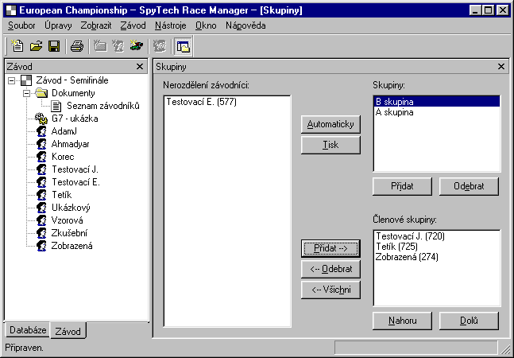

(Command Race | Groups)
This command invokes the group editor which consts of three lists and several buttons
The Racers Available list contains the list of racers which are not assigned to any of the groups. This list is usually empty by the begin of editing. The Groups list contains the list of all groups defined. The Group members contains all the racers being members of the selected group in the Groups list.
The <-- Remove all button moves all the racers from the selected group into the list of unassigned racers. The <-- Remove button performs the same operation but only for the selected racer in the Group members list. The Add --> button moves the selected racers from the list of unassigned racers into the selected group.
The Automatic button performs the automatic distribution among the groups according to the rules of the active race system. The Print button opens the document containing the group distribution and allows you to print out the current group distribution.